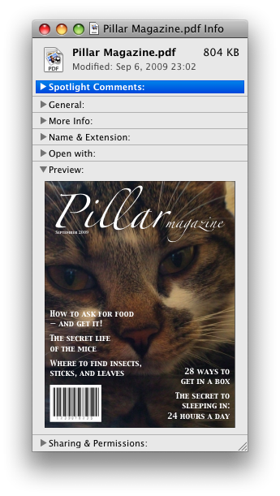
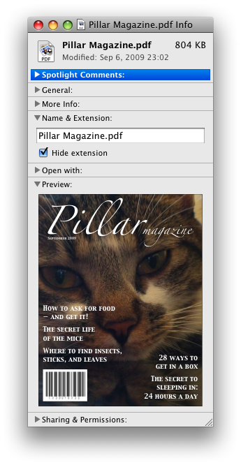
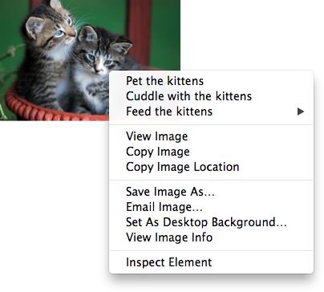

4.11. Interactive elements
4.11.1. The details#elementdef-detailsReferenced in:3.2.4.2.2. Flow content3.2.4.2.7. Interactive content3.2.4.2.8. Palpable content4.3.10. Headings and sections4.4.1. The p element4.9.1.1. Techniques for describing tables4.11.1. The details element (2) (3) (4) (5) (6) (7) (8)4.11.2. The summary element4.12. Scripting4.12.3. The template element5.4.2. Data model8.1.2.4. Optional tags8.2.3.2. The stack of open elements10.5.3. The details element (2) (3) (4)Elements (2) (3)Element content categories (2) (3) (4)AttributesElement InterfacesEvents (2) element
- Categories:
- Flow content.
- Sectioning root.
- Interactive content.
- Palpable content.
- Sectioning root.
- Contexts in which this element can be used:
- Where flow content is expected.
- Content model:
- One
summaryelement followed by flow content. - Tag omission in text/html:
- Neither tag is omissible
- Content attributes:
- Global attributes
open- Whether the details are visible - Allowed ARIA role attribute values:
- Any role that supports
aria-expanded. - Allowed ARIA state and property attributes:
- Global aria-* attributes
- Any
aria-*attributes applicable to the allowed roles. - Any
- DOM interface:
-
interface HTMLDetailsElement#htmldetailselement-htmldetailselementReferenced in:ElementsElement Interfaces : HTMLElement { attribute boolean open; };
The details element represents a disclosure widget from which the
user can obtain additional information or controls.
The details element is not appropriate for footnotes. Please see §4.13.5 Footnotes for details on how to mark up footnotes.
The first summary element child of the element, if any, represents the summary or legend of the details. If there is no
child summary element, the user agent should provide its own legend (e.g.,
"Details").
The rest of the element’s contents represents the additional information or controls.
The open#element-attrdef-details-openReferenced in:Elements content attribute is a boolean
attribute. If present, it indicates that both the summary and the additional information is
to be shown to the user. If the attribute is absent, only the summary is to be shown.
When the element is created, if the attribute is absent, the additional information should be hidden; if the attribute is present, that information should be shown. Subsequently, if the attribute is removed, then the information should be hidden; if the attribute is added, the information should be shown.
The user agent should allow the user to request that the additional information be shown or
hidden. To honor a request for the details to be shown, the user agent must set the open attribute on the element to the value open. To honor a request for the information to be hidden, the user agent must
remove the open attribute from the element.
Whenever the open attribute is added to or removed from
a details element, the user agent must queue a task that runs the
following steps, which are known as the details notification task steps#details-notification-task-stepsReferenced in:4.11.1. The details element, for this details element:
-
If another task has been queued to run the details notification task steps for this
detailselement, then abort these steps.When the
openattribute is toggled several times in succession, these steps essentially get coalesced so that only one event is fired. - Fire a simple event named
toggleat thedetailselement.
The task source for this task must be the DOM manipulation task source.
The open#dom-htmldetailselement-openReferenced in:4.11.1. The details element IDL attribute must reflect the open content attribute.
details element being used to hide technical
details in a progress report.
<section class="progress window"> <h1>Copying "Really Achieving Your Childhood Dreams"</h1> <details> <summary>Copying... <progress max="375505392" value="97543282"></progress> 25%</summary> <dl> <dt>Transfer rate:</dt> <dd>452KB/s</dd> <dt>Local filename:</dt> <dd>/home/rpausch/raycd.m4v</dd> <dt>Remote filename:</dt> <dd>/var/www/lectures/raycd.m4v</dd> <dt>Duration:</dt> <dd>01:16:27</dd> <dt>Color profile:</dt> <dd>SD (6-1-6)</dd> <dt>Dimensions:</dt> <dd>320×240</dd> </dl> </details> </section>
details element can be used to hide some controls by
default:
<details> <summary><label for=fn>Name & Extension:</label></summary> <p><input type=text id=fn name=fn value="Pillar Magazine.pdf"> <p><label><input type=checkbox name=ext checked> Hide extension</label> </details>
One could use this in conjunction with other details in a list to allow the user
to collapse a set of fields down to a small set of headings, with the ability to open each
one.

In these examples, the summary really just summarizes what the controls can change, and not the actual values, which is less than ideal.
open attribute is added and removed
automatically as the user interacts with the control, it can be used in CSS to style the element
differently based on its state. Here, a stylesheet is used to animate the color of the summary
when the element is opened or closed:
<style> details > summary { transition: color 1s; color: black; } details[open] > summary { color: red; } </style> <details> <summary>Automated Status: Operational</summary> <p>Velocity: 12m/s</p> <p>Direction: North</p> </details>
4.11.2. The summary#elementdef-summaryReferenced in:4.7.5.1.4. Graphical Representations: Charts, diagrams, graphs, maps, illustrations4.11.1. The details element (2) (3)4.11.2. The summary element (2)8.2.3.2. The stack of open elements10.5.3. The details elementElements (2)Element Interfaces element
- Categories:
- None.
- Contexts in which this element can be used:
- As the first child of a
detailselement. - Content model:
- Either: phrasing content.
- Or: one element of heading content.
- Tag omission in text/html:
- Neither tag is omissible
- Content attributes:
- Global attributes
- Allowed ARIA role attribute values:
button.- Allowed ARIA state and property attributes:
- Global aria-* attributes
- Any
aria-*attributes applicable to the allowed roles. - Any
- DOM interface:
- Uses
HTMLElement.
The summary element represents a summary, caption, or legend for the
rest of the contents of the summary element’s parent details element, if any.
4.11.3. The menu#elementdef-menuReferenced in:3.2.4.2.2. Flow content3.2.4.2.8. Palpable content3.2.5.4. The translate attribute3.2.5.6. The dir attribute4.4.1. The p element4.4.7. The li element (2)4.10.6. The button element4.11.3. The menu element (2) (3) (4) (5) (6) (7) (8) (9) (10) (11) (12) (13) (14) (15) (16) (17) (18) (19)4.11.4. The menuitem element (2)4.11.5.1. Declaring a context menu (2)4.11.5.2. Processing model4.11.5.3. The RelatedEvent interfaces4.12.3. The template element8.1.2.4. Optional tags8.2.3.2. The stack of open elements10.3.10. Margin collapsing quirks11.2. Non-conforming features11.3.4. Other elements, attributes and APIsElements (2) (3) (4) (5)Element content categories (2)Attributes (2)Element InterfacesEvents (2) element
- Categories:
- Flow content.
- If the element’s
typeattribute is in the toolbar state: Palpable content. - If the element’s
- Contexts in which this element can be used:
- Where flow content is expected.
- If the element’s
typeattribute is in the popup menu state: as the child of amenuelement whosetypeattribute is in the popup menu state. - If the element’s
- Content model:
- If the element’s
typeattribute is in the toolbar state: either zero or moreliand script-supporting elements, or, flow content.- If the element’s
typeattribute is in the popup menu state: in any order, zero or moremenuitemelements, zero or morehrelements, zero or moremenuelements whosetypeattributes are in the popup menu state, and zero or more script-supporting elements. - If the element’s
- Tag omission in text/html:
- Neither tag is omissible
- Content attributes:
- Global attributes
type- Type of menulabel- User-visible label - Allowed ARIA role attribute values:
menu(default - do not set),directory,list,listbox,menubar,tablist,tabpanelortree.- Allowed ARIA state and property attributes:
- Global aria-* attributes
- Any
aria-*attributes applicable to the allowed roles. - Any
- DOM interface:
-
interface HTMLMenuElement#htmlmenuelement-htmlmenuelementReferenced in:3.2.2. Elements in the DOM4.10.6. The button element11.3.4. Other elements, attributes and APIsElementsElement Interfaces : HTMLElement { attribute DOMString type; attribute DOMString label; };
The menu element represents a list of commands.
The type#element-attrdef-menu-typeReferenced in:ElementsElement content categories attribute is an enumerated
attribute indicating the kind of menu being declared. The attribute has two states. The
"context" keyword maps to the popup menu#statedef-menu-popup-menuReferenced in:4.10.6. The button element (2)4.11.3. The menu element (2) (3) (4) (5) (6) (7) (8)4.11.4. The menuitem element4.11.5.1. Declaring a context menu4.11.5.2. Processing model4.12.3. The template element state, in which the element is declaring a context menu
or the menu for a menu button. The "toolbar" keyword maps to the toolbar#statedef-menu-toolbarReferenced in:3.2.4.2.8. Palpable content4.4.7. The li element4.11.3. The menu element (2) (3) (4)Element content categories state, in which the element is declaring a toolbar. The attribute may also be
omitted. The missing value default is the popup menu state if the parent element is a menu element whose type attribute is in the popup
menu state; otherwise, it is the toolbar state.
If a menu element’s type attribute is in the popup menu state, then the element represents the commands of a popup menu, and the user can only examine and interact with the commands if that
popup menu is activated through some other element, either via the contextmenu attribute or the button element’s menu attribute.
If a menu element’s type attribute is in the toolbar state, then the element represents a
toolbar consisting of its contents, in the form of either an unordered list of items (represented
by li elements), each of which represents a command that the user can perform or
activate, or, if the element has no li element children, flow content describing available commands.
The label#element-attrdef-menu-labelReferenced in:Elements attribute gives the label of the
menu. It is used by user agents to display nested menus in the UI: a context menu containing
another menu would use the nested menu’s label attribute for
the submenu’s menu label. The label attribute must only be
specified on menu elements whose parent element is a menu element whose type attribute is in the popup
menu state.
A menu is a currently relevant menu element#currently-relevant-menu-elementReferenced in:4.11.6.1. Facets if it is the
child of a currently relevant menu element, or if it is the designated pop-up menu of a button element that is not inert, does not have a hidden attribute, and is not
the descendant of an element with a hidden attribute.
A menu construct#menu-constructReferenced in:4.11.3. The menu element (2) (3) (4) (5) (6) consists of an ordered list of zero or more menu item constructs#menu-item-constructsReferenced in:4.11.3. The menu element (2) (3) (4), which can be any of:
- Commands, which can be marked as default commands#default-commandsReferenced in:4.11.3. The menu element (
menuitem) - Separators#separatorsReferenced in:4.9.13. Table sorting model (2) (3)4.11.3. The menu element (2) (3) (4) (5) (6) (7) (
hr) - Other menu constructs, each with an associated submenu label#submenu-labelReferenced in:4.11.3. The menu element (2), which allows the list to be nested (
menu)
To build and show a menu#build-and-showReferenced in:4.10.6. The button element4.11.5.2. Processing model for a particular menu element source and with a particular element subject as a subject, the user agent
must run the following steps:
- Let pop-up menu be the menu construct created by the build a menu construct algorithm when passed the source element.
-
Display pop-up menu to the user, and let the algorithm that invoked this one continue.
If the user selects a menu item construct that corresponds to an element that still represents a command when the user selects it, then the user agent must invoke that command’s Action. If the command’s Action is defined as firing a
clickevent, either directly or via the run synthetic click activation steps algorithm, then therelatedTargetattribute of thatclickevent must be initialized to subject.Pop-up menus must not, while being shown, reflect changes in the DOM. The menu is constructed from the DOM before being shown, and is then immutable.
To build a menu construct#build-a-menu-constructReferenced in:4.11.3. The menu element (2) for an element source, the user agent must run the following steps, which return a menu construct:
- Let generated menu be an empty menu construct.
-
Run the menu item generator steps for the
menuelement using generated menu as the output.The menu item generator#menu-item-generatorReferenced in:4.11.3. The menu element (2) steps for a
menuelement using a specific menu construct output as output are as follows: For each child node of themenuin tree order, run the appropriate steps from the following list:- If the child is a
menuitemelement that defines a command - Append the command to output, respecting the command’s facets. If the
menuitemelement has adefaultattribute, mark the command as being a default command. - If the child is an
hrelement - Append a separator to output.
- If the child is a
menuelement with nolabelattribute - Append a separator to output, then run
the menu item generator steps for this child
menuelement, using output as the output, then append another separator to output. - If the child is a
menuelement with alabelattribute - Let submenu be the result of running the build a menu construct steps for the child
menuelement. Then, append submenu to output, using the value of the childmenuelement’slabelattribute as the submenu label. - Otherwise
- Ignore the child node.
- If the child is a
- Remove from output any menu construct whose submenu label is the empty string.
- Remove from output any menu item construct representing a command whose Label is the empty string.
- Collapse all sequences of two or more adjacent separators in output to a single separator.
- If the first menu item construct in output is a separator, then remove it.
- If the last menu item construct in output is a separator, then remove it.
- Return output.
The type#dom-htmlmenuelement-typeReferenced in:4.11.3. The menu element IDL attribute must reflect the content attribute of the same name, limited to only known values.
The label#dom-htmlmenuelement-labelReferenced in:4.11.3. The menu element IDL attribute must reflect the content attribute of the same name.
menu element is used to describe a toolbar with three menu
buttons on it, each of which has a dropdown menu with a series of options:
<menu> <li> <button type=menu value="File" menu="filemenu"> <menu id="filemenu" type="context"> <menuitem onclick="fnew()" label="New..."> <menuitem onclick="fopen()" label="Open..."> <menuitem onclick="fsave()" label="Save"> <menuitem onclick="fsaveas()" label="Save as..."> </menu> </li> <li> <button type=menu value="Edit" menu="editmenu"> <menu id="editmenu" type="context"> <menuitem onclick="ecopy()" label="Copy"> <menuitem onclick="ecut()" label="Cut"> <menuitem onclick="epaste()" label="Paste"> </menu> </li> <li> <button type=menu value="Help" menu="helpmenu"> <menu id="helpmenu" type="context"> <menuitem onclick="location='help.html'" label="Help"> <menuitem onclick="location='about.html'" label="About"> </menu> </li> </menu>
In a supporting user agent, this might look like this (assuming the user has just activated the second button):

4.11.4. The menuitem#elementdef-menuitemReferenced in:3.2.5.2. The title attribute3.2.5.4. The translate attribute3.2.5.6. The dir attribute4.11.3. The menu element (2) (3)4.11.4. The menuitem element (2) (3) (4)4.11.6.1. Facets4.11.6.6. Using the menuitem element to define a
command (2)4.14. Disabled elements4.15.2. Pseudo-classes (2) (3) (4)5.4.3. The tabindex attribute8.1.2. Elements8.2. Parsing HTML documents (2)8.2.3.2. The stack of open elements8.3. Serializing HTML fragmentsElements (2)Attributes (2) (3) (4) (5) (6) (7) (8) (9)Element Interfaces element
- Categories:
- None.
- Contexts in which this element can be used:
- As a child of a
menuelement whosetypeattribute is in the popup menu state. - Content model:
- Nothing.
- Tag omission in text/html:
- No end tag.
- Content attributes:
- Global attributes
type- Type of commandlabel- User-visible labelicon- Icon for the commanddisabledWhether the command or control is disabledcheckedWhether the command or control is checkedradiogroupName of group of commands to treat as a radio button groupdefault- Mark the command as being a default command- Also, the
titleattribute has special semantics on this element. - Allowed ARIA role attribute values:
menuitem(default - do not set).- Allowed ARIA state and property attributes:
- Global aria-* attributes
- Any
aria-*attributes applicable to the allowed roles. - Any
- DOM interface:
-
interface HTMLMenuItemElement#htmlmenuitemelement-htmlmenuitemelementReferenced in:8.2. Parsing HTML documentsElementsElement Interfaces : HTMLElement { attribute DOMString type; attribute DOMString label; attribute DOMString icon; attribute boolean disabled; attribute boolean checked; attribute DOMString radiogroup; attribute boolean default; };
The menuitem element represents a command that the user can invoke from a popup
menu (either a context menu or the menu of a menu button).
A menuitem element that uses one or more of the type, label, icon, disabled, checked, and radiogroup attributes defines a new command.
The type#element-attrdef-menuitem-typeReferenced in:Elements attribute indicates the kind of
command: either a normal command with an associated action, or a state or option that can be
toggled, or a selection of one item from a list of items.
The attribute is an enumerated attribute with three keywords and states. The
"command" keyword maps to the Command state, the "checkbox" keyword maps to the Checkbox state, and the "radio" keyword maps to the Radio state. The missing value default is the Command state.
- The Command#statedef-menuitem-commandReferenced in:4.11.4. The menuitem element (2) state
- The element represents a normal command with an associated action.
- The Checkbox#statedef-menuitem-checkboxReferenced in:4.11.4. The menuitem element (2)4.15.2. Pseudo-classes state
- The element represents a state or option that can be toggled.
- The Radio#statedef-menuitem-radioReferenced in:4.11.4. The menuitem element (2) (3) (4)4.15.2. Pseudo-classes state
- The element represents a selection of one item from a list of items.
The label#element-attrdef-menuitem-labelReferenced in:Elements attribute gives the name of the
command, as shown to the user. If the attribute is
specified, it must have a value that is not the empty string.
The icon#element-attrdef-menuitem-iconReferenced in:Elements attribute gives a picture that
represents the command. If the attribute is specified, the attribute’s value must contain a valid non-empty URL potentially surrounded by spaces. To obtain
the absolute URL of the icon when the attribute’s value is not the empty string, the
attribute’s value must be resolved relative to the element.
When the attribute is absent, or its value is the empty string, or resolving its value fails, there is no icon.
The disabled#element-attrdef-menuitem-disabledReferenced in:Elements attribute is a boolean attribute that, if present, indicates that the command is not available in
the current state.
The distinction between disabled and hidden is subtle. A command would be disabled if, in the same
context, it could be enabled if only certain aspects of the situation were changed. A command
would be marked as hidden if, in that situation, the command will never be enabled. For example,
in the context menu for a water faucet, the command "open" might be disabled if the faucet is
already open, but the command "eat" would be marked hidden since the faucet could never be
eaten.
The checked#element-attrdef-menuitem-checkedReferenced in:Elements attribute is a boolean
attribute that, if present, indicates that the command is selected. The attribute must be
omitted unless the type attribute is in either the Checkbox state or the Radio state.
The radiogroup#element-attrdef-menuitem-radiogroupReferenced in:Elements attribute gives the
name of the group of commands that will be toggled when the command itself is toggled, for
commands whose type attribute has the value "radio". The scope of the name is the child list of the parent element. The
attribute must be omitted unless the type attribute is in
the Radio state. When specified, the
attribute’s value must be a non-empty string.
The title attribute gives a hint describing
the command, which might be shown to the user to help him.
The default#element-attrdef-menuitem-defaultReferenced in:Elements attribute indicates, if
present, that the command is the one that would have been invoked if the user had directly
activated the menu’s subject instead of using the menu. The default attribute is a boolean attribute.
The type#dom-htmlmenuitemelement-typeReferenced in:4.11.4. The menuitem element IDL attribute must reflect the content attribute of the same name, limited to only known
values.
The label#dom-htmlmenuitemelement-labelReferenced in:4.11.4. The menuitem element, icon#dom-htmlmenuitemelement-iconReferenced in:4.11.4. The menuitem element, disabled#dom-htmlmenuitemelement-disabledReferenced in:4.11.4. The menuitem element, checked#dom-htmlmenuitemelement-checkedReferenced in:4.11.4. The menuitem element, and radiogroup#dom-htmlmenuitemelement-radiogroupReferenced in:4.11.4. The menuitem element, and default#dom-htmlmenuitemelement-defaultReferenced in:4.11.4. The menuitem element IDL attributes must reflect the respective content attributes of the same name.
If the element’s Disabled State is false
(enabled) then the element’s activation behavior depends on the element’s type attribute, as follows:
- If the
typeattribute is in the Checkbox state - If the element has a
checkedattribute, the user agent must remove that attribute. Otherwise, the user agent must add acheckedattribute, with the literal value "checked". - If the
typeattribute is in the Radio state -
If the element has a parent, then the user agent must walk the list of child nodes of that parent
element, and for each node that is a
menuitemelement, if that element has aradiogroupattribute whose value exactly matches the current element’s (treating missingradiogroupattributes as if they were the empty string), and has acheckedattribute, must remove that attribute.Then, the element’s
checkedattribute must be set to the literal value "checked". - Otherwise
- The element’s activation behavior is to do nothing.
Firing a synthetic click event at the element
does not cause any of the actions described above to happen.
If the element’s Disabled State is true (disabled) then the element has no activation behavior.
The menuitem element is not rendered except as part of a popup menu.
<button type=menu menu=editmenu>Commands...</button> <menu type="context" id="editmenu"> <menuitem type="radio" radiogroup="alignment" checked="checked" label="Left" icon="icons/alL.png" onclick="setAlign('left')"> <menuitem type="radio" radiogroup="alignment" label="Center" icon="icons/alC.png" onclick="setAlign('center')"> <menuitem type="radio" radiogroup="alignment" label="Right" icon="icons/alR.png" onclick="setAlign('right')"> <hr> <menuitem type="command" disabled label="Publish" icon="icons/pub.png" onclick="publish()"> </menu>
4.11.5. Context menus#context-menuReferenced in:4.11.4. The menuitem element
4.11.5.1. Declaring a context menu
The contextmenu attribute gives the element’s
context menu. The value must be the ID of a menu element in the same home subtree whose type attribute is in the popup menu state.
When a user right-clicks on an element with a contextmenu attribute, the user agent will first fire a contextmenu event at the element, and then, if that event is not
canceled, a show event at the menu element.
<form name="npc"> <label>Character name: <input name=char type=text contextmenu=namemenu required></label> <menu type=context id=namemenu> <menuitem label="Pick random name" onclick="document.forms.npc.elements.char.value = getRandomName()"> <menuitem label="Prefill other fields based on name" onclick="prefillFields(document.forms.npc.elements.char.value)"> </menu> </form>
This adds two items to the control’s context menu, one called "Pick random name", and one called "Prefill other fields based on name". They invoke scripts that are not shown in the example above.
4.11.5.2. Processing model
Each element has an assigned context menu#assigned-context-menuReferenced in:4.11.5.2. Processing model (2) (3) (4) (5) (6) (7), which can be null. If an element A has a contextmenu attribute, and there is
an element with the ID given by A’s contextmenu attribute’s value in A’s home subtree, and the first such element in tree order is a menu element whose type attribute is in the popup menu state, then A’s assigned
context menu is that element. Otherwise, if A has a parent element,
then A’s assigned context menu is the assigned context
menu of its parent element. Otherwise, A’s assigned context
menu is null.
When an element’s context menu is requested (e.g., by the user right-clicking the element, or pressing a context menu key), the user agent must apply the appropriate rules from the following list:
- If the user requested a context menu using a pointing device
- The user agent must fire a trusted event with the name
contextmenu, that bubbles and is cancelable, and that uses theMouseEventinterface, at the element for which the menu was requested. The context information of the event must be initialized to the same values as the lastMouseEventuser interaction event that was fired as part of the gesture that was interpreted as a request for the context menu. - Otherwise
- The user agent must fire a synthetic mouse
event named
contextmenuthat bubbles and is cancelable at the element for which the menu was requested.
Typically, therefore, the firing of the contextmenu event will be the default action of a mouseup or keyup event. The exact
sequence of events is user agent-dependent, as it will vary based on platform conventions.
The default action of the contextmenu event depends on
whether or not the element for which the menu was requested has a non-null assigned context
menu when the event dispatch has completed, as follows.
If the assigned context menu of the element for which the menu was requested is null, the default action must be for the user agent to show its default context menu, if it has one.
Otherwise, let subject be the element for which the menu was requested, and let menu be the assigned context menu of target immediately after
the contextmenu event’s dispatch has completed. The user
agent must fire a trusted event with the name show at menu, using the RelatedEvent interface,
with the relatedTarget attribute initialized
to subject. The event must be cancelable.
If this event (the show event) is not canceled, then
the user agent must build and show the menu for menu with subject as the subject.
The user agent may also provide access to its default context menu, if any, with the context menu shown. For example, it could merge the menu items from the two menus together, or provide the page’s context menu as a submenu of the default menu. In general, user agents are encouraged to de-emphasize their own contextual menu items, so as to give the author’s context menu the appearance of legitimacy — to allow documents to feel like "applications" rather than "mere Web pages".
User agents may provide means for bypassing the context menu processing model, ensuring that
the user can always access the user agent’s default context menus. For example, the user agent could
handle right-clicks that have the Shift key depressed in such a way that it does not fire the contextmenu event and instead always shows the default
context menu.
The contextMenu#dom-htmlelement-contextmenuReferenced in:3.2.2. Elements in the DOM IDL attribute must reflect the contextmenu content attribute.
<img src="cats.jpeg" alt="Cats" contextmenu=catsmenu> <menu type="context" id="catsmenu"> <menuitem label="Pet the kittens" onclick="kittens.pet()"> <menuitem label="Cuddle with the kittens" onclick="kittens.cuddle()"> <menu label="Feed the kittens"> <menuitem label="Fish" onclick="kittens.feed(fish)"> <menuitem label="Chicken" onclick="kittens.feed(chicken)"> </menu> </menu>
When a user of a mouse-operated visual Web browser right-clicks on the image, the browser might pop up a context menu like this:

When the user clicks the disclosure triangle, such a user agent would expand the context menu in place, to show the browser’s own commands:

4.11.5.3. The RelatedEvent interfaces
[Constructor(DOMString type, optional RelatedEventInit eventInitDict)] interface RelatedEvent#relatedevent-relatedeventReferenced in:Events : Event { readonly attribute EventTarget? relatedTarget; }; dictionary RelatedEventInit#dictdef-relatedevent-relatedeventinitReferenced in:4.11.5.3. The RelatedEvent interfaces : EventInit { EventTarget? relatedTarget; };
- event .
relatedTarget -
Returns the other event target involved in this event. For example, when a
showevent fires on amenuelement, the other event target involved in the event would be the element for which the menu is being shown.
The relatedTarget#dom-relatedevent-relatedtargetReferenced in:4.11.5.3. The RelatedEvent interfaces attribute must
return the value it was initialized to. When the object is created, this attribute must be
initialized to null. It represents the other event target that is related to the event.
4.11.6. Commands
4.11.6.1. Facets
A command#menuitem-defines-a-commandReferenced in:4.11.3. The menu element (2) (3) (4) (5) (6)4.11.6.1. Facets4.11.6.3. Using the button element to define a command4.11.6.4. Using the input element to define a command4.11.6.6. Using the menuitem element to define a command4.11.6.7. Using the accesskey attribute on a label element to define a command4.11.6.9. Using the accesskey attribute to define a command on other elements (2)5.2. Inert subtrees is the abstraction behind menu items, buttons, and links. Once a command is defined, other parts of the interface can refer to the same command, allowing many access points to a single feature to share facets such as the Disabled State.
Commands are defined to have the following facets#menuitem-facetsReferenced in:4.11.3. The menu element:
- Label#facetdef-menuitem-labelReferenced in:4.11.6.2. Using the a element to define a command4.11.6.3. Using the button element to define a command4.11.6.4. Using the input element to define a command (2)4.11.6.5. Using the option element to define a command4.11.6.6. Using the menuitem element to define a command4.11.6.7. Using the accesskey attribute on a label element to define a command4.11.6.8. Using the accesskey attribute on a legend element to define a command4.11.6.9. Using the accesskey attribute to define a command on other elements (2)
- The name of the command as seen by the user.
- Access Key#facetdef-menuitem-access-keyReferenced in:4.11.6.1. Facets (2)4.11.6.2. Using the a element to define a command4.11.6.3. Using the button element to define a command4.11.6.4. Using the input element to define a command4.11.6.5. Using the option element to define a command4.11.6.6. Using the menuitem element to define a command4.11.6.7. Using the accesskey attribute on a label element to define a command4.11.6.8. Using the accesskey attribute on a legend element to define a command4.11.6.9. Using the accesskey attribute to define a command on other elements
- A key combination selected by the user agent that triggers the command. A command might not have an Access Key.
- Hidden State#facetdef-menuitem-hidden-stateReferenced in:4.11.6.1. Facets4.11.6.2. Using the a element to define a command4.11.6.3. Using the button element to define a command4.11.6.4. Using the input element to define a command4.11.6.5. Using the option element to define a command4.11.6.6. Using the menuitem element to define a command4.11.6.7. Using the accesskey attribute on a label element to define a command4.11.6.8. Using the accesskey attribute on a legend element to define a command4.11.6.9. Using the accesskey attribute to define a command on other elements5.5.3. Processing model
- Whether the command is hidden or not (basically, whether it should be shown in menus).
- Disabled State#facetdef-menuitem-disabled-stateReferenced in:4.11.4. The menuitem element (2)4.11.6.1. Facets4.11.6.2. Using the a element to define a command4.11.6.3. Using the button element to define a command4.11.6.4. Using the input element to define a command4.11.6.5. Using the option element to define a command4.11.6.6. Using the menuitem element to define a command4.11.6.7. Using the accesskey attribute on a label element to define a command4.11.6.8. Using the accesskey attribute on a legend element to define a command4.11.6.9. Using the accesskey attribute to define a command on other elements5.5.3. Processing model
- Whether the command is relevant and can be triggered or not.
- Action#facetdef-menuitem-actionReferenced in:4.11.6.2. Using the a element to define a command4.11.6.3. Using the button element to define a command4.11.6.4. Using the input element to define a command4.11.6.5. Using the option element to define a command4.11.6.6. Using the menuitem element to define a command4.11.6.7. Using the accesskey attribute on a label element to define a command4.11.6.8. Using the accesskey attribute on a legend element to define a command4.11.6.9. Using the accesskey attribute to define a command on other elements
- The actual effect that triggering the command will have. This could be a scripted event handler, a URL to which to navigate, or a form submission.
User agents may expose the commands that match the following criteria:
- The facet is false (visible)
- The element is in a
Documentthat has an associated browsing context. - Neither the element nor any of its ancestors has a
hiddenattribute specified. - The element is not a
menuitemelement, or it is a child of a currently relevantmenuelement, or it has an Access Key.
User agents are encouraged to do this especially for commands that have Access Keys, as a way to advertise those keys to the user.
For example, such commands could be listed in the user agent’s menu bar.
4.11.6.2. Using the a element to define a command
An a element with an href attribute defines a command.
The Label of the command is the string given by the
element’s textContent IDL attribute.
The Access Key of the command is the element’s assigned access key, if any.
The of the command is true (hidden)
if the element has a hidden attribute, and false otherwise.
The Disabled State facet of the command is true if the element or one of its ancestors is inert, and false otherwise.
The Action of the command, if the element has a
defined activation behavior, is to run synthetic click activation steps on the element. Otherwise, it is just to fire a click event at the element.
4.11.6.3. Using the button element to define a command
A button element always defines a command.
The Label, Access Key, , and Action facets of the command are determined as for a elements (see the previous section).
The Disabled State of the command is true if the element or one of its ancestors is inert, or if the element’s disabled state is set, and false otherwise.
4.11.6.4. Using the input element to define a command
An input element whose type attribute is in
one of the submit button, reset button, Image
Button, Button, Radio Button, or Checkbox states defines a command.
The Label of the command is determined as follows:
- If the
typeattribute is in one of the submit button, reset button, Image Button, or Button states, then the Label is the string given by thevalueattribute, if any, and a user agent-dependent, locale-dependent value that the user agent uses to label the button itself if the attribute is absent. - Otherwise, if the element is a labeled control, then the Label is the string given by the
textContentof the firstlabelelement in tree order whose labeled control is the element in question. (In DOM terms, this is the string given byelement.labels[0].textContent.) - Otherwise, if the
valueattribute is present, then the Label is the value of that attribute. - Otherwise, the Label is the empty string.
The Access Key of the command is the element’s assigned access key, if any.
The of the command is true (hidden)
if the element has a hidden attribute, and false otherwise.
The Disabled State of the command is true if the element or one of its ancestors is inert, or if the element’s disabled state is set, and false otherwise.
The Action of the command, if the element has a
defined activation behavior, is to run synthetic click activation steps on the element. Otherwise, it is just to fire a click event at the element.
4.11.6.5. Using the option element to define a command#menu-commandReferenced in:4.10.7. The select element (2)
An option element with an ancestor select element and either no value attribute or a value attribute that is not the empty string defines a command.
The Label of the command is the value of the option element’s label attribute, if there is
one, or else the value of option element’s textContent IDL attribute,
with leading and trailing whitespace
stripped, and with any sequences of two or more space
characters replaced by a single U+0020 SPACE character.
The Access Key of the command is the element’s assigned access key, if any.
The of the command is true (hidden)
if the element has a hidden attribute, and false otherwise.
The Disabled State of the command is true if
the element is disabled, or if its nearest ancestor select element is disabled, or if it or one
of its ancestors is inert, and false otherwise.
If the option’s nearest ancestor select element has a multiple attribute, the Action of the command is to pick the option element. Otherwise, the Action is to toggle the option element.
4.11.6.6. Using the menuitem element to define a
command
A menuitem element always defines a command.
The Label of the command is the value of the element’s label attribute, if there is one, or the empty string if
it doesn’t.
The Access Key of the command is the element’s assigned access key, if any.
The of the command is true (hidden)
if the element has a hidden attribute, and false otherwise.
The Disabled State of the command is true if
the element or one of its ancestors is inert, or if the element has a disabled attribute, and false otherwise.
The Action of the command, if the element has a
defined activation behavior, is to run synthetic click activation steps on the element. Otherwise, it is just to fire a click event at the element.
4.11.6.7. Using the accesskey attribute
on a label element to define a command
A label element that has an assigned access key and a labeled
control and whose labeled control defines a command, itself defines a command.
The Label of the command is the string given by the
element’s textContent IDL attribute.
The Access Key of the command is the element’s assigned access key.
The , Disabled State, and Action facets of the command are the same as the respective facets of the element’s labeled control.
4.11.6.8. Using the accesskey attribute
on a legend element to define a command
A legend element that has an assigned access key and is a child of a fieldset element that has a descendant that is not a descendant of the legend element and is neither a label element nor a legend element but that defines a command, itself defines a command.
The Label of the command is the string given by the
element’s textContent IDL attribute.
The Access Key of the command is the element’s assigned access key.
The , Disabled State, and Action facets of the command are the same as the respective
facets of the first element in tree order that is a descendant of the parent of the legend element that defines a command but is not
a descendant of the legend element and is neither a label nor a legend element.
4.11.6.9. Using the accesskey attribute to define a command on other elements
An element that has an assigned access key defines a command.
If one of the earlier sections that define elements that define commands define that this element defines a command, then that section applies to this element, and this section does not. Otherwise, this section applies to that element.
The Label of the command depends on the element. If
the element is a labeled control, the textContent of the first label element in tree order whose labeled control is the
element in question is the Label (in DOM terms, this is
the string given by element.labels[0].textContent). Otherwise,
the Label is the textContent of the element
itself.
The Access Key of the command is the element’s assigned access key.
The of the command is true (hidden)
if the element has a hidden attribute, and false otherwise.
The Disabled State of the command is true if the element or one of its ancestors is inert, and false otherwise.
The Action of the command is to run the following steps:
- Run the focusing steps for the element.
- If the element has a defined activation behavior, run synthetic click activation steps on the element.
- Otherwise, if the element does not have a defined activation behavior, fire a
clickevent at the element.
4.11.7. The dialog#elementdef-dialogReferenced in:2.2.2. Dependencies3.2.4.2.2. Flow content4.3.10. Headings and sections4.10.19.6. Form submission4.10.19.6.1. Autofocusing a form control: the autofocus attribute (2) (3)4.10.22.3. Form submission algorithm4.11.7. The dialog element (2) (3) (4) (5) (6) (7) (8) (9) (10) (11) (12) (13) (14) (15) (16) (17) (18) (19) (20) (21) (22) (23)5.2. Inert subtrees (2)5.4.2. Data model (2) (3) (4) (5)5.4.4. Processing model (2) (3) (4)ElementsElement content categories (2)AttributesElement InterfacesEvents (2) (3) element
- Categories:
- Flow content.
- Sectioning root.
- Contexts in which this element can be used:
- Where flow content is expected.
- Content model:
- Flow content.
- Tag omission in text/html:
- Neither tag is omissible
- Content attributes:
- Global attributes
open- Whether the dialog box is showing - Allowed ARIA role attribute values:
dialog(default - do not set),alert,alertdialog,application,log,marqueeorstatus.- Allowed ARIA state and property attributes:
- Global aria-* attributes
- Any
aria-*attributes applicable to the allowed roles. - Any
- DOM interface:
-
interface HTMLDialogElement#htmldialogelement-htmldialogelementReferenced in:ElementsElement Interfaces : HTMLElement { attribute boolean open; attribute DOMString returnValue; void show(optional (MouseEvent or Element) anchor); void showModal(optional (MouseEvent or Element) anchor); void close(optional DOMString returnValue); };
The dialog element represents a part of an application that a user interacts with
to perform a task, for example a dialog box, inspector, or window.
The open#element-attrdef-dialog-openReferenced in:Elements attribute is a boolean
attribute. When specified, it indicates that the dialog element is active and
that the user can interact with it.
A dialog element without an open attribute
specified should not be shown to the user. This requirement may be implemented indirectly through
the style layer. For example, user agents that support the suggested
default rendering implement this requirement using the CSS rules described in §10 Rendering.
The tabindex attribute must not be specified on dialog elements.
- dialog .
show( [ anchor ] ) -
Displays the
dialogelement.The argument, if provided, provides an anchor point to which the element will be fixed.
- dialog .
showModal( [ anchor ] ) -
Displays the
dialogelement and makes it the top-most modal dialog.The argument, if provided, provides an anchor point to which the element will be fixed.
This method honors the
autofocusattribute. - dialog .
close( [ result ] ) -
Closes the
dialogelement.The argument, if provided, provides a return value.
- dialog .
returnValue[ = result ] -
Returns the
dialog’s return value.Can be set, to update the return value.
When the show()#dom-htmldialogelement-showReferenced in:4.11.7. The dialog element method is invoked, the user
agent must run the following steps:
- If the element already has an
openattribute, then abort these steps. - Add an
openattribute to thedialogelement, whose value is the empty string. - If the
show()method was invoked with an argument, set up the position of thedialogelement, using that argument as the anchor. Otherwise, set thedialogto the normal alignment mode. - Run the dialog focusing steps for the
dialogelement.
Each Document has a stack of dialog elements known as the pending dialog stack#pending-dialog-stackReferenced in:4.11.7. The dialog element (2) (3) (4) (5) (6) (7) (8) (9) (10) (11) (12) (13) (14). When a Document is created, this stack must be
initialized to be empty.
When an element is added to the pending dialog stack, it must also be added to the top layer. When an element is removed from the pending dialog stack, it must be removed from the top layer. [FULLSCREEN]
When the #modal-dialog-is-shownReferenced in:5.4.4. Processing modelshowModal()#dom-htmldialogelement-showmodalReferenced in:4.11.7. The dialog element method is invoked,
the user agent must run the following steps:
- Let subject be the
dialogelement on which the method was invoked. - If subject already has an
openattribute, then throw anInvalidStateErrorexception and abort these steps. - If subject is not in a
Document, then throw anInvalidStateErrorexception and abort these steps. - Add an
openattribute to subject, whose value is the empty string. - If the
showModal()method was invoked with an argument, set up the position of subject, using that argument as the anchor. Otherwise, set thedialogto the centered alignment mode. - Let subject’s node document be blocked by the modal dialog subject.
- Push subject onto subject’s node document’s pending dialog stack.
- Run the dialog focusing steps for subject.
The dialog focusing steps#dialog-focusing-stepsReferenced in:4.11.7. The dialog element (2) for a dialog element subject are as follows:
- If for some reason subject is not a control group owner at this point, or if it is inert, abort these steps.
-
Let control be the first non-inert focusable area in subject’s control group whose DOM anchor has an
autofocusattribute specified.If there isn’t one, then let control be the first non-inert focusable area in subject’s control group.
If there isn’t one of those either, then let control be subject.
- Run the focusing steps for control.
If at any time a dialog element is removed from a Document, then if that dialog is in that Document’s pending dialog stack, the following steps must be run:
- Let subject be that
dialogelement and document be theDocumentfrom which it is being removed. - Remove subject from document’s pending dialog stack.
- If document’s pending dialog stack is not empty, then let document be blocked by the modal dialog that is at the top of document’s pending dialog stack. Otherwise, let document be no longer blocked by a modal dialog at all.
When the close()#dom-htmldialogelement-closeReferenced in:4.11.7. The dialog element method is invoked, the user
agent must close the dialog that the method was invoked on. If the method was invoked
with an argument, that argument must be used as the return value; otherwise, there is no return
value.
When a dialog element subject is to be closed#close-the-dialogReferenced in:4.10.22.3. Form submission algorithm4.11.7. The dialog element (2), optionally with a return value result, the user agent
must run the following steps:
- If subject does not have an
openattribute, then abort these steps. - Remove subject’s
openattribute. - If the argument result was provided, then set the
returnValueattribute to the value of result. -
If subject is in its
Document’s pending dialog stack, then run these substeps:- Remove subject from that pending dialog stack.
- If that pending dialog stack is not empty, then let subject’s node document be blocked by the modal dialog that is at the top of the pending dialog stack. Otherwise, let document be no longer blocked by a modal dialog at all.
- Queue a task to fire a simple event named
closeat subject.
The returnValue#dom-htmldialogelement-returnvalueReferenced in:4.11.7. The dialog element IDL attribute, on
getting, must return the last value to which it was set. On setting, it must be set to the new
value. When the element is created, it must be set to the empty string.
Canceling dialogs: When a Document’s pending dialog
stack is not empty, user agents may provide a user interface that, upon activation, queues a task to fire a simple event named cancel that is cancelable at the top dialog element on
the Document’s pending dialog stack. The default action of this event
must be to check if that element has an open attribute, and
if it does, close the dialog with no return value.
An example of such a UI mechanism would be the user pressing the "Escape" key.
All dialog elements are always in one of three modes: normal alignment#normal-alignmentReferenced in:4.11.7. The dialog element (2) (3), centered alignment#centered-alignmentReferenced in:4.11.7. The dialog element (2) (3) (4) (5) (6) (7), and magic alignment#magically-alignedReferenced in:4.11.7. The dialog element (2) (3). When a dialog element
is created, it must be placed in the normal alignment mode. In this mode, normal CSS
requirements apply to the element. The centered alignment mode is only used for dialog elements that are in the top layer. [FULLSCREEN] [CSS-2015]
When an element subject is placed in centered alignment mode, and when it is in that mode and has new rendering boxes created, the user agent must set up the element such that its top static position, for the purposes of calculating the used value of the top property, is the value that would place the element’s top margin edge as far from the top of the viewport as the element’s bottom margin edge from the bottom of the viewport, if the element’s height is less than the height of the viewport, and otherwise is the value that would place the element’s top margin edge at the top of the viewport.
If there is a dialog element with centered alignment and that is being rendered when its browsing context changes viewport width (as
measured in CSS pixels), then the user agent must recreate the element’s boxes, recalculating its
top static position as in the previous paragraph.
This top static position of a dialog element with centered alignment must remain the element’s top static position until its boxes are recreated. (The element’s static
position is only used in calculating the used value of the top property in certain situations;
it’s not used, for instance, to position the element if its position property is set to static.)
When a user agent is to set up the position#set-up-the-positionReferenced in:4.11.7. The dialog element (2) (3) of an element subject using an anchor anchor, it must run the following steps:
-
If anchor is a
MouseEventobject, then run these substeps:- If anchor’s target element does not have a rendered box, or is in a different document than subject, then let subject be in the centered alignment mode, and abort the set up the position steps.
- Let anchor element be an anonymous element rendered as a box with zero height and width (so its margin and border boxes both just form a point), positioned so that its top and left are at the coordinate identified by the event, and whose properties all compute to their initial values.
Otherwise, let anchor element be anchor.
- Put subject in the magic alignment mode, aligned to anchor element.
While an element A has magic alignment, aligned to an element B, the following requirements apply:
-
If at any time either A or B cease having rendered boxes, A and B cease being in the same
Document, or B ceases being earlier than A in tree order, then, if subject is in the pending dialog stack, let subject’s mode become centered alignment, otherwise, let subject’s mode become normal alignment. -
A’s position property must compute to the keyword 'absolute-anchored' rather than whatever it would otherwise compute to (i.e., the position property’s specified value is ignored).
The 'absolute-anchored' keyword’s requirements are described below.
-
The anchor points for A and B are defined as per the appropriate entry in the following list:
- If the computed value of anchor-point is none on both A and B
- The anchor points of A and B are the center points of their respective first boxes' border boxes.
- If the computed value of anchor-point is none on A and a specific point on B
-
The anchor point of B is the point given by its anchor-point property.
If the anchor point of B is the center point of B’s first box’s border box, then A’s anchor point is the center point of its first box’s margin box.
Otherwise, A’s anchor point is on one of its margin edges. Consider four hypothetical half-infinite lines L1, L2, L3, and L4 that each start in the center of B’s first box’s border box, and that extend respectively through the top left corner, top right corner, bottom right corner, and bottom left corner of B’s first box’s border box. A’s anchor point is determined by the location of B’s anchor point relative to these four hypothetical lines, as follows:
If the anchor point of B lies on L1 or L2, or inside the area bounded by L1 and L2 that also contains the points above B’s first box’s border box, then let A’s anchor point be the horizontal center of A’s bottom margin edge.
Otherwise, if the anchor point of B lies on L3 or L4, or inside the area bounded by L4 and L4 that also contains the points below B’s first box’s border box, then let A’s anchor point be the horizontal center of A’s top margin edge.
Otherwise, if the anchor point of B lies inside the area bounded by L4 and L1 that also contains the points to the left of B’s first box’s border box, then let A’s anchor point be the vertical center of A’s right margin edge.
Otherwise, the anchor point of B lies inside the area bounded by L2 and L3 that also contains the points to the right of B’s first box’s border box; let A’s anchor point be the vertical center of A’s left margin edge.
- If the computed value of anchor-point is a specific point on A and none on B
-
The anchor point of A is the point given by its anchor-point property.
If the anchor point of A is the center point of A’s first box’s margin box, then B’s anchor point is the center point of its first box’s border box.
Otherwise, B’s anchor point is on one of its border edges. Consider four hypothetical half-infinite lines L1, L2, L3, and L4 that each start in the center of A’s first box’s margin box, and that extend respectively through the top left corner, top right corner, bottom right corner, and bottom left corner of A’s first box’s margin box. B’s anchor point is determined by the location of A’s anchor point relative to these four hypothetical lines, as follows:
If the anchor point of A lies on L1 or L2, or inside the area bounded by L1 and L2 that also contains the points above A’s first box’s margin box, then let B’s anchor point be the horizontal center of B’s bottom border edge.
Otherwise, if the anchor point of A lies on L3 or L4, or inside the area bounded by L4 and L4 that also contains the points below A’s first box’s margin box, then let B’s anchor point be the horizontal center of B’s top border edge.
Otherwise, if the anchor point of A lies inside the area bounded by L4 and L1 that also contains the points to the left of A’s first box’s margin box, then let B’s anchor point be the vertical center of B’s right border edge.
Otherwise, the anchor point of A lies inside the area bounded by L2 and L3 that also contains the points to the right of A’s first box’s margin box; let B’s anchor point be the vertical center of B’s left border edge.
- If the computed value of anchor-point is a specific point on both A and B
- The anchor points of A and B are the points given by their respective anchor-point properties.
The rules above generally use A’s margin box, but B’s border box. This is because while A always has a margin box, and using the margin box allows for the dialog to be positioned offset from the box it is annotating, B sometimes does not have a margin box (e.g., if it is a table-cell), or has a margin box whose position may be not entirely clear (e.g., in the face of margin collapsing and clear handling of in-flow blocks).
In cases where B does not have a border box but its border box is used by the algorithm above, user agents must use its first box’s content area instead. (This is in particular an issue with boxes in tables that have border-collapse set to collapse.)
-
When an element’s position property computes to 'absolute-anchored#absolute-anchoredReferenced in:4.11.7. The dialog element (2) (3) (4)', the float property does not apply and must compute to none, the display property must compute to a value as described by the table in the section of CSS 2.1 describing the relationships between display, position, and float, and the element’s box must be positioned using the rules for absolute positioning but with its static position set such that if the box is positioned in its static position, its anchor point is exactly aligned over the anchor point of the element to which it is magically aligned. Elements aligned in this way are absolutely positioned. For the purposes of determining the containing block of other elements, the 'absolute-anchored' keyword must be treated like the absolute keyword.
The trivial example of an element that does not have a rendered box is one whose display property computes to none. However, there are many other cases; e.g., table columns do not have boxes (their properties merely affect other boxes).
If an element to which another element is anchored changes rendering, the anchored element will be repositioned accordingly. (In other words, the requirements above are live, they are not just calculated once per anchored element.)
The 'absolute-anchored'
keyword is not a keyword that can be specified in CSS; the position property can only compute to
this value if the dialog element is positioned via the APIs described above.
User agents in visual interactive media should allow the user to pan the viewport to access all
parts of a dialog element’s border box, even if the element is larger than the
viewport and the viewport would otherwise not have a scroll mechanism (e.g., because the viewport’s overflow property is set to hidden).
The open#dom-htmldialogelement-openReferenced in:4.11.7. The dialog element IDL attribute must reflect the open content attribute.
main element is used to draw the user’s
attention to the more important parts.
<dialog> <h2>Add to Wallet</h2> <main> <p>How many gold coins do you want to add to your wallet?</p> <p><input name=amt type=number min=0 step=0.01 value=100></p> </main> <p><small>You add coins at your own risk.</small></p> <p><label><input name=round type=checkbox> Only add perfectly round coins </label> <p><input type=button onclick="submit()" value="Add Coins"></p> </dialog>
4.11.7.1. Anchor points
This section will eventually be moved to a CSS specification; it is specified here only on an interim basis until an editor can be found to own this.
| Name: | anchor-point#propdef-anchor-pointReferenced in:4.11.7. The dialog element (2) (3) (4) (5) (6) (7)4.11.7.1. Anchor points |
|---|---|
| Value: | [ none | <position> ] |
| Initial: | none |
| Applies to: | all elements |
| Inherited: | no |
| Percentages: | refer to width or height of box; see prose |
| Media: | visual |
| Computed value: | The specified value, but with any lengths replaced by their corresponding absolute length |
| Animatable: | no |
| Canonical order: | per grammar |
The anchor-point property specifies a point to which dialog boxes are to be aligned.
If the value is a <position>, the anchor point is the point given by the value, which must be interpreted relative to the element’s first rendered box’s margin box. Percentages must be calculated relative to the element’s first rendered box’s margin box (specifically, its width for the horizontal position and its height for the vertical position). [CSS-VALUES] [CSS-2015]
If the value is the keyword none#valdef-anchor-point-noneReferenced in:4.11.7. The dialog element (2) (3) (4) (5), then no explicit anchor point is defined. The user agent
will pick an anchor point automatically if necessary (as described in the definition of the open() method above).